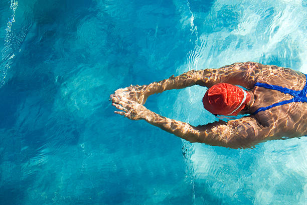
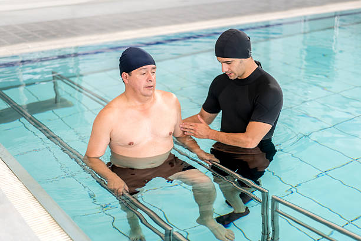
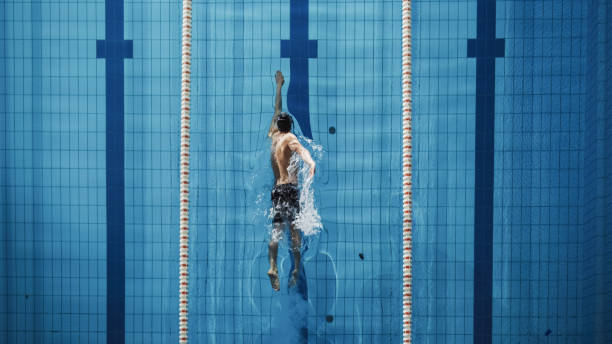
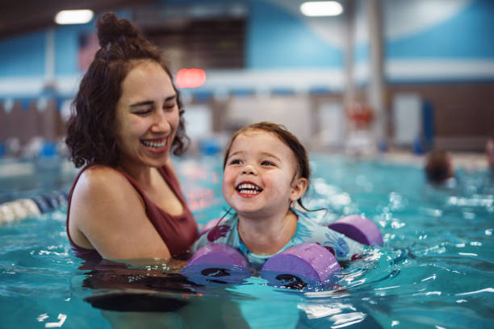
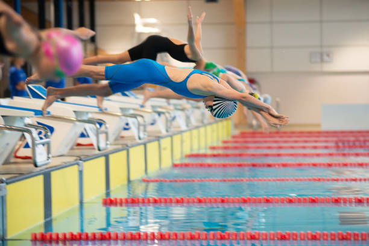
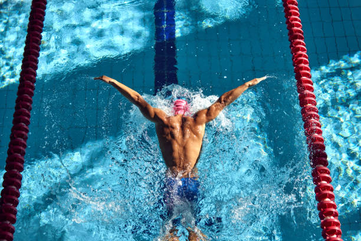

- Natación adultos
- Inicial, intermedio y avanzado.
- Aquagym
- Terapéutica
- Pileta Libre
- Niños
- Pre-escolar (3 a 5 años)
- Escuelita (6 a 12 años)
- Competición
- Menores, cadetes y juveniles.
- Máster
Nuestras actividades
En Swim Academy , ofrecemos actividades acuáticas para todas las edades y niveles
Explorá nuestras opciones y encontrá la actividad perfecta para vos. ¡Te esperamos para nadar juntos!
Natación adultos
Adultos
Clases para mayores de 13 años que buscan aprender a nadar, mejorar su técnica o mantenerse activos en el agua. Hay para todos los niveles: iniciación, Intermedio y avanzado!
Aquagym

Actividad física en el agua, de bajo impacto, ideal para mejorar la movilidad, fuerza y resistencia sin cargar las articulaciones.
Terapéutica
Clases enfocadas en la rehabilitación y el bienestar físico, supervisadas por Kinesiólogos y profesores de Ed. Física especializados en salud y movimiento acuático.
Pileta Libre
Espacio destinado al uso personal de la pileta. No se dictan clases, pero siempre hay un guardavidas presente.
Natación niños
Pre-escolar (3 a 5 años)
Iniciación a la natación en un entorno seguro y lúdico, adaptado a las necesidades de niños pequeños. Se trabaja la familiarización con el medio acuático.
Escuelita (6 a 12 años)

Clases para niños y niñas en edad escolar, con foco en el aprendizaje de estilos básicos, flotación, respiración y técnica general.
Competición
Competición: Menores, Cadetes y Juveniles
Entrenamientos intensivos para nadadores jóvenes con objetivos competitivos. Se trabaja técnica, velocidad, resistencia y estrategia de carrera.
Competición: Másters
Grupo competitivo para adultos con experiencia en natación. Se entrena con foco en el rendimiento, manteniendo un ambiente motivador y social.